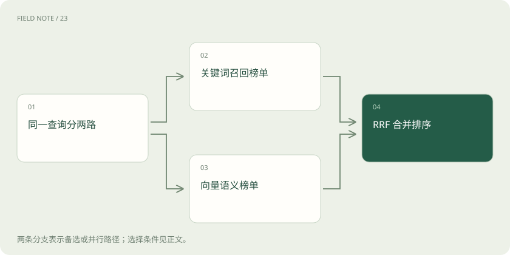

先读哪些知识
先用一个类比理解
像两位馆员分别按书名和主题找书，再按各自榜单合并推荐。
类比只帮助建立直觉，不等同于技术的完整机制。
一图看懂

概念边界
关键词检索擅长精确名称、编号和罕见词，向量检索更容易处理不同说法表达相近意图。混合检索先分别产生候选，融合层再形成一个排序列表，不是把两类原始分数随意相加。
内部怎样运作
RRF 根据结果在各列表中的名次累计贡献，避免直接比较不可比的分值。候选窗口决定哪些文档有机会被融合，窗口外材料无法凭空出现。融合还需要处理相同文档标识、过滤条件与访问权限。
把机制放进具体场景
假设 RRF 的 k=60，文档甲在两榜排名1和10，分数为1/61+1/70≈0.03068；乙排名3和3，得2/63≈0.03175，因此乙在前。原始相关性分值不同并不妨碍融合，但榜单外的材料没有贡献。
取舍与容易忽略的限制
名次融合弱化了不同分值尺度的差异，但也会丢掉原始分数间距的信息。两份榜单若高度相似，融合收益可能有限；若都没有召回关键材料，则融合不能修复覆盖缺口。实际使用还需统一过滤范围、文档标识和去重规则，否则同一证据可能被拆成多个条目占据候选位置。
放在一起对比
| 方式或概念 | 主要作用 | 关键边界 |
|---|---|---|
| 关键词 | 精确名称和编号 | 不同说法可能漏检 |
| 向量 | 语义接近 | 精确限制可能混淆 |
| RRF | 融合不同榜单名次 | 不能补回榜外材料 |
放进真实场景
SCENARIO
设备报错代码适合精确关键词匹配，而“机器突然不转了”需要语义关联。把两路候选合并后再检查条件，可兼顾编号和自然语言描述。
别踩这个误区
混合检索扩大覆盖的同时可能引入无关材料，应按问题类型分别评价。
想一想
RRF 为什么不直接把两路原始分数相加？
不同检索器分值尺度可能不相容，RRF 主要利用名次进行融合。
关联阅读
资料与边界
本文为原创知识讲解。类比和图示经过简化；示例数字不代表实测或报价。整理日期：2026-11-04。文末列出对应技术的原始资料，具体功能与版本支持请以原文为准。